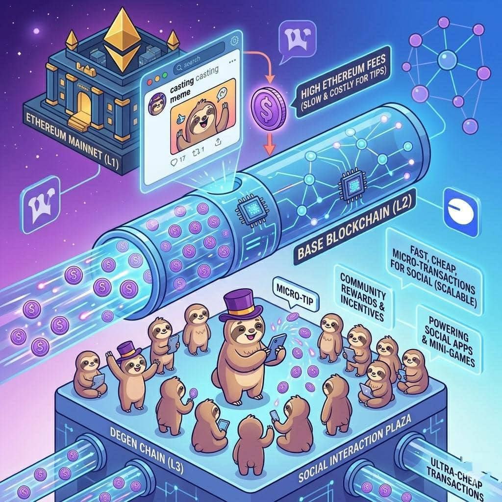

Blockchain Foundation
Why Base blockchain matters for $DEGEN and low fee social interactions.
The success of Degen (DEGEN) is strongly connected to the blockchain it runs on: Base.
This blockchain foundation is important because it allows DEGEN to support fast, cheap, and frequent social transactions, such as tipping creators or rewarding community members.
To understand why Base matters, we need to look at how blockchains work and why DEGEN chose this particular one.
Base is a Layer-2 blockchain built on top of Ethereum.
Ethereum is one of the most secure blockchains in the world, but it can be expensive and slow when many people use it.
Base solves this problem by:
- processing transactions faster
- lowering transaction costs
- still relying on Ethereum for security
Because of this design, Base makes crypto easier to use for everyday activities, including social payments.
The DEGEN ecosystem needed a blockchain that could support many small transactions.
For example:
- tipping creators
- sending rewards
- interacting with social apps
- running community tools
If these transactions were done directly on Ethereum, the fees could sometimes cost several dollars per transaction.
For a simple tip like 5 or 10 tokens, that would not make sense.
Base solves this by making transactions extremely cheap, which allows tipping and rewards to happen frequently.
The DEGEN ecosystem focuses on social interactions, especially on decentralized platforms like Farcaster.
On these platforms, users may perform many actions every day, such as:
- tipping creators
- rewarding posts
- sending micro-payments
- interacting with mini-apps
Because Base transactions are cheap and fast, it becomes possible to send very small payments many times per day.
This is important because social economies rely on micro transactions rather than large payments.
Another reason Base is important is scalability.
As the DEGEN community grows, the number of transactions increases.
Base is designed to handle large transaction volumes while keeping fees low.
This makes it possible for the ecosystem to support:
- thousands of users
- millions of transactions
- multiple apps and services
Without this kind of infrastructure, social tokens like DEGEN would struggle to grow.
Base is not only where the token lives it also provides the foundation for many DEGEN ecosystem tools.
Over time, developers have built:
- social tipping systems
- decentralized applications
- trading platforms
- community tools
Because everything runs on the same blockchain infrastructure, these tools can interact with each other easily.
This creates a connected ecosystem.
The ecosystem has expanded even further with the launch of Degen Chain.
Degen Chain is a specialized blockchain designed for the community.
It sits on top of Base, making it a Layer 3 network.
This chain is optimized for:
- ultra cheap transactions
- social apps
- gaming and DeFi
- community experiments
In this system, $DEGEN also acts as the gas token, meaning it is used to pay for transactions on the network.
The combination of:
- Base infrastructure
- Degen Chain
- social platforms like Farcaster
creates a new type of ecosystem called SocialFi where social media and finance are combined on the blockchain.
In this model:
- posts can generate rewards
- communities can fund creators
- developers can build social apps with built in payments
This would not be possible without a blockchain like Base that supports cheap and fast transactions.
